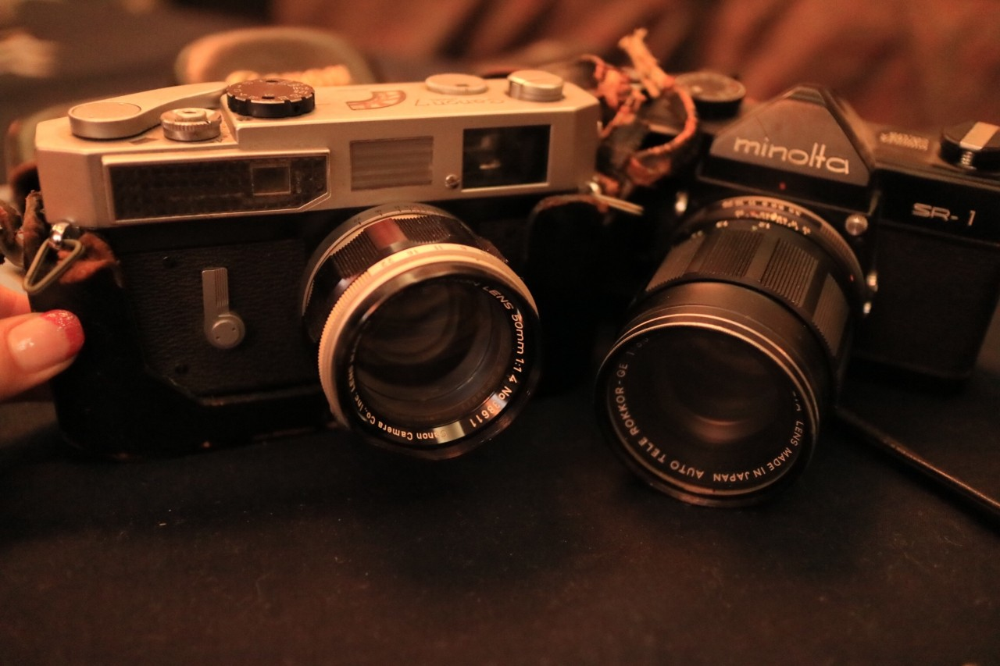

| 2017/01 11 Wed | 斎藤ちはる フィルム。 |
ちはるーむへようこそ。
テスト期間は大変で涙が出そうになる...
そして睡眠時間が削られてるから
目がしぱしぱしちゃって
また涙が出そうになる...
でもこれを乗り切ったら3年生。
テストが１つ１つ終わって行く毎に
2年生でいられる時間が終わっていく。
感慨深いなぁ。
毎日を大切に過ごさなきゃ
あっという間に通り過ぎちゃう！
1日1日を大事に大事に( ´ｰ`)
------------------------------------------------♡
お正月におばあちゃんちに行った時に
何気な〜く棚を見ていたら、
カッコいいカメラを二台も発見！

なんとおじいちゃんが昔使っていた
カメラだったんです◎
両方ともずっしり、カッコいい！
レンズを覗いてみると
今でも全然使えそうなくらいに綺麗で
素敵なシャッター音もしました！
まだまだ使えそう◎
実はレトロなカメラも気になっていたので
おばあちゃんに断りを得て
一台借りてきちゃいました！
minolta
ちゃんとフィルムも買いました〜
準備万端◎
フィルムの張り方もあまり分からないので
父に教わりながら。
現像するまでどんな写真が撮れてるか
分からないから光の露出とか構図とか
全然分からないのがあれだけど
それもまた味だよね。
写真が出来上がるまでの時間もワクワク。
Canon7の方も今度借りてもいいか
おばあちゃんに聞いてみようかな〜◎
また写真が撮れたらアップしますね！！
楽しみにしていてください(﹡ˆ ˆ﹡)
-----------------------------------♡
♬ ChihaMusic
「花束を君に」宇多田ヒカルさん
温かい雰囲気の曲だけど
どこか切なくて淋しげ。
そこがまたいい。
特に冒頭の声が好き。
"どんな言葉並べても
真実にはならないから
今日は贈ろう 涙色の花束を君に"
言葉だけでは伝えられない事を。
真実を伝えても言葉しか伝わらないなら、
花束を贈るというのは素敵な考え。
更に綺麗な色とかではなくて
涙色というのがより深い。
イエス
フォーリンラブ
昨日に引き続き
またしてもラブパワー♡
おやすみ〜
斎藤ちはる